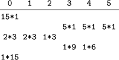

C++ Programming Robert Sedgewick - Princeton University Addison Wesley Professional Algorithms in C++, Parts 1–4: Fundamentals, Data Structure, Sorting, Searching, Third Edition
11.3. External Sorting
We move next to another kind of abstract sorting problem, which applies when the file to be sorted is much too large to fit in the random-access memory of the computer. We use the term external sorting to describe this situation. There are many different types of external sorting devices, which can place a variety of different restrictions on the atomic operations used to implement the sort. Still, it is useful to consider sorting methods that use two basic primitive operations: read data from external storage into main memory, and write data from main memory onto external storage. We assume that the cost of these two operations is so much larger than the cost of primitive computational operations that we ignore the latter entirely. For example, in this abstract model, we ignore the cost of sorting the main memory! For huge memories or poor sorting methods, this assumption may not be justified; but it is generally possible to factor in an estimate of the true cost in practical situations if necessary.
The wide variety of types and costs of external storage devices makes the development of external sorting methods highly dependent on current technology. These methods can be complicated, and many parameters affect their performance; that a clever method might go unappreciated or unused because of a simple change in the technology is certainly a possibility in the study of external sorting. For this reason, we shall concentrate on reviewing general methods rather than on developing specific implementations in this section.
Over and above the high read–write cost for external devices, there are often severe restrictions on access, depending on the device. For example, for most types of devices, read and write operations between main memory and external storage are generally done most efficiently in large contiguous blocks of data. Also, external devices with huge capacities are often designed such that peak performance is achieved when we access the blocks in a sequential manner. For example, we cannot read items at the end of a magnetic tape without first scanning through items at the beginning—for practical purposes, our access to items on the tape is restricted to those appearing somewhere close to the items most recently accessed. Several modern technologies have this same property. Accordingly, in this section, we concentrate on methods that read and write large blocks of data sequentially, making the implicit assumption that fast implementations of this type of data access can be achieved for the machines and devices that are of interest.
When we are in the process of reading or writing a number of different files, we assume that they are all on different external storage devices. On ancient machines, where files were stored on externally mounted magnetic tapes, this assumption was an absolute requirement. When working with disks, it is possible to implement the algorithms that we consider using only a single external device, but it generally will be much more efficient to use multiple devices.
A first step for someone planning to implement an efficient program to sort a huge file might be to implement an efficient program to make a copy of the file. A second step might be to implement a program to reverse the order of the file. Whatever difficulties arise in solving these tasks certainly need to be addressed in implementing an external sort. (The sort might have to do either one of them.) The purpose of using an abstract model is to allow us to separate such implementation issues from algorithm design issues.
The sorting algorithms that we examine are organized as a number of passes over all the data, and we usually measure the cost of an external sorting method by simply counting the number of such passes. Typically, we need relatively few passes—perhaps ten or fewer. This fact implies that eliminating even a single pass can significantly improve performance. Our basic assumption is that the running time of an external sorting method is dominated by input and output; thus, we can estimate the running time of an external sort by multiplying the number of passes it uses by the time required to read and write the whole file.
In summary, the abstract model that we shall use for external sorting involves a basic assumption that the file to be sorted is far too large to fit in main memory, and accounts for two other resources: running time (number of passes through the data) and the number of external devices available for use. We assume that we have
N records to be sorted, on an external device space in the main memory to hold M records and 2P external devices for use during the sort.
We assign the the label 0 to the external device containing the input, and the labels 1, 2, . . ., 2P - 1 to the others. The goal of the sort is to put the records back onto device 0, in sorted order. As we shall see, there is a tradeoff between P and the total running time—we are interested in quantifying that tradeoff so that we can compare competing strategies.
There are many reasons why this idealized model may not be realistic. Still, like any good abstract model, it does capture the essential aspects of the situation, and it does provide a precise framework within which we can explore algorithmic ideas, many of which are of direct utility in practical situations.
Most external sorting methods use the following general strategy. Make a first pass through the file to be sorted, breaking it up into blocks about the size of the internal memory, and sort these blocks. Then, merge the sorted blocks together, if necessary by making several passes through the file, creating successively larger sorted blocks until the whole file is sorted. This approach is called sort–merge, and it has been used effectively since computers first found widespread use in commercial applications in the 1950s.
The simplest sort–merge strategy, which is called balanced multiway merging, is illustrated in Figure 11.12. The method consists of an initial distribution pass, followed by several multiway merging passes.
In the initial distribution pass, we take the elements A S O from the input, sort them, and put the sorted run A O S on the first output device. Next, we take the elements R T I from the input, sort them, and put the sorted run I R T on the second output device. Continuing in this way, cycling through the output devices, we end with 15 runs: five on each output device. In the first merging phase, we merge A O S, I R T, and A G N to get A A G I O R S T, which we put on the first output device; then, we merge the second runs on the input devices to get D E G G I M N N R, which we put on the second output device; and so forth; again ending up with the data distributed in a balanced manner on three devices. We complete the sort with two additional merging passes.
In the initial distribution pass, we distribute the input among external devices P, P + 1, . . ., 2P - 1, in sorted blocks of M records each (except possibly the final block, which is smaller, if N is not a multiple of M). This distribution is easy to do–we read the first M records from the input, sort them, and write the sorted block onto device P; then read the next M records from the input, sort them, and write the sorted block onto device P + 1; and so forth. If, after reaching device 2P - 1 we still have more input (that is, if N > PM),
we put a second sorted block on device P, then a second sorted block on device P + 1, and so forth. We continue in this way until the input is exhausted. After the distribution, the number of sorted blocks on each device is N/M rounded up or down to the next integer. If N is a multiple of M, then all the blocks are of size N/M (otherwise, all but the final one are of size N/M). For small N, there may be fewer than P blocks, and one or more of the devices may be empty.
In the first multiway merging pass, we regard devices P through 2P - 1 as input devices, and devices 0 through P - 1 as output devices. We do P-way merging to merge the sorted blocks of size M on the input devices into sorted blocks of size PM, then distribute them onto the output devices in as balanced a manner as possible. First, we merge together the first block from each of the input devices and put the result onto device 0; then, we put the result of merging the second block on each input device onto device 1; and so forth. After reaching device P - 1, we put a second sorted block on device 0, then a second sorted block on device 1, and so forth. We continue in this way until the inputs are exhausted. After the distribution, the number of sorted blocks on each device is N/(PM) rounded up or down to the next integer. If N is a multiple of PM, then all the blocks are of size PM (otherwise, the final block is smaller). If N is not larger than PM, there is just one sorted block left (on device 0), and we are finished.
Otherwise, we iterate the process and do a second multiway merging pass, regarding devices 0, 1, . . . , P - 1 as the input devices, and devices P, P + 1, . . ., 2P - 1 as the output devices. We do P-way merging to make the sorted blocks of size PM on the input devices into sorted blocks of size P2M, then distribute them back onto the output devices. We are finished after the second pass (with the result on device P) if N is not larger than P2M.
Continuing in this way, back and forth between devices 0 through P - 1 and devices P through 2P - 1, we increase the size of the blocks by a factor of P through P-way merges until we eventually have just one block, on device 0 or on device P. The final merge in each pass may not be a full P-way merge; otherwise the process is well balanced. Figure 11.13 depicts the process using only the numbers and relative sizes of the runs. We measure the cost of the merge by performing the indicated multiplications in this table, summing the results (not including the entry in the bottom row), and dividing by the initial number of runs. This calculation gives cost in terms of the number of passes over the data.
In the initial distribution for a balanced three-way sort–merge of a file 15 times the size of the internal memory, we put five runs of relative size 1 on devices 3, 4, and 5, leaving devices 0, 1, and 2 empty. In the first merging phase, we put two runs of size 3 on devices 0 and 1, and one run of size 3 on device 2, leaving devices 3, 4, and 5 empty. Then, we merge the runs on devices 0, 1, and 2, and distribute them back to devices 3, 4, and 5, and so forth, continuing until only one run remains, on device 0. The total number of records processed is 60: four passes over all 15 records.

To implement P-way merging, we can use a priority queue of size P. We want to output repeatedly the smallest of the elements not yet output from each of the P sorted blocks to be merged, then to replace the element output with the next element from the block from which it came. To accomplish this action, we keep device indices in the priority queue, with an operator< function that reads the value of the key of the next record to be read from the indicated device (and provides a sentinel larger than all keys in records when the end of a block is reached). The merge is then a simple loop that reads the next record from the device having the smallest key and writes that record to the output, then replaces that record on the priority queue with the next record from the same device, continuing until a sentinel key is the smallest in the priority queue. We could use a heap implementation to make the time required for the priority queue proportional to log P, but P is normally so small that this cost is dwarfed by the cost of writing to external storage. In our abstract model, we ignore priority-queue costs and assume that we have efficient sequential access to data on external devices, so that we can measure running time by counting the number of passes through the data. In practice, we might use an elementary priority-queue implementation and focus our programming on making sure that the external devices run at maximum efficiency.
Property 11.4. With 2P external devices and internal memory sufficient to hold M records, a sort–merge that is based on a P-way balanced merge takes about 1 + logP(N/M) passes|
One pass is required for distribution. If N = MPk, the blocks are all of size MP after the first merge, MP2 after the second, MP3 after the third; and so forth. The sort is complete after k = logP(N/M) passes. Otherwise, if MPk-1 < N < MPk, the effect of incomplete and empty blocks makes the blocks vary in size near the end of the process, but we are still finished after k = logP(N/M) passes.
|
For example, if we want to sort 1 billion records using six devices and enough internal memory to hold 1 million records, we can do so with a three-way sort–merge with a total of eight passes through the data–one for distribution and log3 1000 = 7 merging passes. We will have sorted runs of 1 million records after the distribution pass, 3 million records after the first merge, 9 million records after the second merge, 27 million records after the third merge, and so forth. We can estimate that it should take about nine times as long to sort the file as it does to copy the file.
The most important decision to be made in a practical sort–merge is the choice of the value of P, the order of the merge. In our abstract model, we are restricted to sequential access, which implies that P has to be one-half the number of external devices available for use. This model is a realistic one for many external storage devices. For many other devices, however, nonsequential access is possible–it is just more expensive than sequential access. If only a few devices are available for the sort, nonsequential access might be unavoidable. In such cases, we can still use multiway merging, but we will have to take into account the basic tradeoff that increasing P will decrease the number of passes but increase the amount of (slow) nonsequential access.
Exercises | 11.35 Show how the keys E A S Y Q U E S T I O N W I T H P L E N T Y O F K E Y S are sorted using 3-way balanced merging, in the style of the example diagrammed in Figure 11.12. | | 11.36 What would be the effect on the number of passes used in multiway merging if we were to double the number of external devices in use? | | 11.37 What would be the effect on the number of passes used in multiway merging if we were to increase by a factor of 10 the amount of internal memory available? | | 11.38 Develop an interface for external input and output that involves sequential transfer of blocks of data from external devices that operate asynchronously (or learn details about an existing one on your system). Use the interface to implement P-way merging, with P as large as you can make it while still arranging for the P input files and the input file to be on different output devices. Compare the running time of your program with the time required to copy the files to the output, one after another. | | 11.39 Use the interface from Exercise 11.38 to write a program to reverse the order of as large a file as is feasible on your system. | | 11.40 How would you do a perfect shuffle of all the records on an external device? | | 11.41 Develop a cost model for multiway merging that encompasses algorithms that can switch from one file to another on the same device, at a fixed cost that is much higher than the cost of a sequential read. | | 11.42 Develop an external sorting approach that is based on partitioning a la quicksort or MSD radix sort, analyze it, and compare it with multiway merge. You may use a high level of abstraction, as we did in the description of sort–merge in this section, but you should strive to be able to predict the running time for a given number of devices and a given amount of internal memory. | | 11.43 How would you sort the contents of an external device if no other devices (except main memory) were available for use? | | 11.44 How would you sort the contents of an external device if only one extra device (and main memory) was available for use? |
|